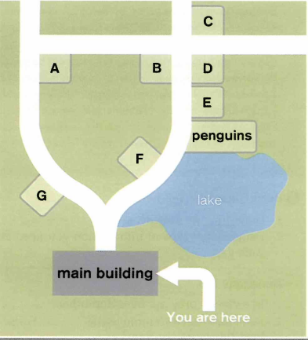

Vocabulary — Wild Australia
These words will help you understand today's listening about Australia Zoo. Study the table, then complete the matching and true/false exercises below.
| word / phrase | meaning | example |
|---|---|---|
| reptile | a cold-blooded animal with scaly skin, such as a snake or lizard | The park started out as a small reptile park before it grew into a full zoo. |
| marsupial | a mammal that carries its young in a pouch | Koalas and wombats are both marsupials native to Australia. |
| apex predator | an animal at the top of the food chain, with no natural predators of its own | The saltwater crocodile is an apex predator in northern Australia. |
| terrified | extremely frightened | He admitted he was terrified of the small, clawed animal, despite years of working with dangerous wildlife. |
| enclosure | an area with a fence or wall around it, used to keep animals | Visitors can walk right through part of the kangaroo enclosure. |
| mixture | a combination of two or more different things | Keepers feed them a mixture of insects, minced meat and other ingredients. |
| injured | hurt or physically harmed | The hospital treats hundreds of injured animals brought in from the wild every month. |
| external fixation device | a metal frame fitted outside the body to hold a broken bone in place while it heals | Vets used an external fixation device to help the koala's arm heal properly. |
| rescue unit | a team that goes out to help animals in danger | The rescue unit is called out to help injured wildlife every single day. |
| endangered | at serious risk of dying out completely | Several native species are now considered endangered and need extra protection. |
Match each word to its definition.
True or false?
1. "Terrified" means feeling very calm and relaxed.
2. A mixture is a combination of two or more different things.
3. If an animal is injured, it means it is completely healthy.
4. An external fixation device is medical equipment used to hold a broken bone in place.
5. A rescue unit's job is to capture new animals to sell to other zoos.
Listening — Australia Zoo
Watch the video, then answer all four parts below.
Part 1 — Multiple choice.
1. What was Australia Zoo originally?
2. Which animal was Robert's father famously terrified of?
3. How long was a Sarcosuchus?
4. What is Bindi's favorite animal mentioned in the video?
5. What is used to feed the echidnas?
6. What is the name of the two-ton rhino?
7. What is the top speed of a wombat?
8. What does the wildlife hospital use to fix a koala's broken arm?
9. Approximately how many koalas does the hospital treat per month?
10. What is the primary reason the rescue unit is out daily?
Part 2 — True or false?
1. The water dragons seen roaming the zoo are escaped pets.
2. Wombats are considered the closest relative to the koala.
3. The Australia Zoo Wildlife Hospital has treated over 51,000 animals.
4. Kids under 12 are allowed to feed the zebras.
5. The zoo's savannah is described as being as big as Africa.
Part 3 — Complete the sentences. Write ONE OR TWO WORDS for each answer.
1. Robert calls the wombats the "" of the bush.
2. Modern crocodiles are different from their ancestors of million years ago.
3. A Sarcosuchus was a type of predator.
4. If the food is not good enough for humans, it is not good enough for the .
5. The echidna's most obvious physical feature is its .
Note: for Q3 and Q4, a few close wordings are all accepted — don't worry if your exact word isn't identical.
Part 4 — Match each animal to the correct description.
Written and spoken summary — Australia Zoo
Now use what you learned from the video to write and then speak about it.
Written summary — at least 80 words.
In at least 80 words, summarise what you learned about Australia Zoo from the video. Mention at least two of the animals and what makes the zoo's approach to caring for wildlife special.
Speaking summary
Useful phrases:
- "The video is about…"
- "One thing that stood out to me was…"
- "I learned that…"
- "What I found most interesting was…"
- "Overall, the video shows that…"
Listening — A Day at the Zoo
Before you listen, discuss these two questions.
Useful chunks:
- "In my opinion…"
- "One advantage is that…"
- "On the other hand…"
- "It really depends on…"
Useful chunks:
- "I think people can learn…"
- "It teaches people about…"
- "For children in particular…"
Now listen and complete the table below.
Write NO MORE THAN TWO WORDS OR A NUMBER for each answer.
| Animal World — today's events | |||
|---|---|---|---|
| name of event | location | type of event | time |
| The World of Ants | the | 11 a.m. | |
| The | film | 12 noon | |
| Encouraging | Exhibition Room | demonstration | 2.30 p.m. |
| Birds of Prey | the lawn | p.m. | |
Now listen and label the map.
You are standing at the "You are here" arrow. Write the correct letter (A–G) for each place.

1. gift shop
2. restaurant
3. picnic area
Listening — A Phone Call from a Customer
Listen to the phone call between Andrea and Junko, then complete all three parts below.
Preparation — match each word or phrase to its definition.
Task 1 — True or false?
1. The delivery hasn't arrived yet.
2. Andrea is having cash flow issues and needs a payment extension.
3. Andrea usually asks for an extension of the payment terms.
4. Andrea has a new order to place, even bigger than the last one.
5. Junko can extend the payment terms on the last order to 60 days.
6. Junko will send Andrea an email confirmation.
Task 2 — Who says each sentence? Sort them into the two groups.
Tip: several sentences will connect to the same box — that's expected, since there are only two groups.
Speaking Part 1 — Animals and Wildlife
Answer each question out loud. Use the useful chunks to help you if you need them.
Useful chunks:
- "My favourite animal has got to be…"
- "I've always loved… because…"
Useful chunks:
- "I've never really liked…"
- "They kind of freak me out because…"
Useful chunks:
- "One of the best places is probably…"
- "You can see a lot of… there."
Useful chunks:
- "It's becoming increasingly popular…"
- "Not many people tend to…"
Speaking Part 2 — Cue Card
Take a minute to make notes, then record your answer. Try to speak for one to two minutes.
Describe a place you have visited where you can see interesting animals.
You should say:
- why you went there
- what the place looked like
- what you did there
…and say which animals you found particularly interesting.
Useful chunks:
- "I'd like to talk about a time when…"
- "The reason I went there was…"
- "It looked absolutely…"
- "What really stood out to me was…"
Day 16 complete! 🎉
All 7 tasks done — great work with Australia Zoo, the customer phone call, and today's speaking practice. Come back tomorrow for the next day.